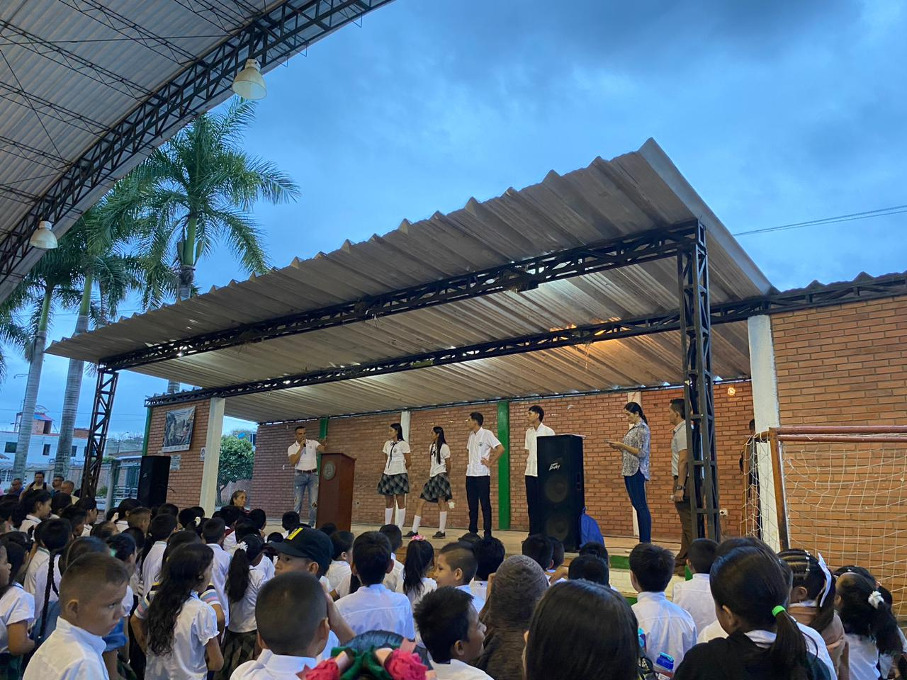
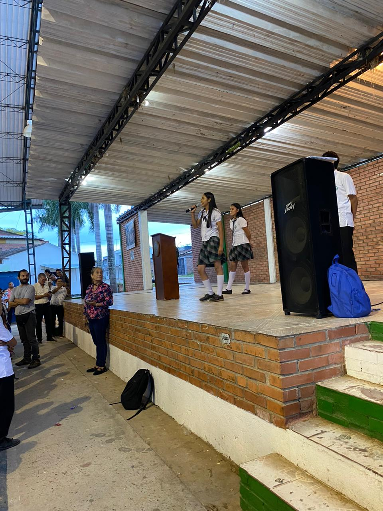

El Colegio Palmar se prepara para un emocionante proceso de elección de la personería estudiantil para el año 2024. Este importante evento brinda a los estudiantes la oportunidad de postularse para desempeñar roles de liderazgo y representación dentro de la comunidad estudiantil. La postulación de candidatos a la personería estudiantil es un momento crucial en la vida académica del colegio, ya que los estudiantes tienen la oportunidad de presentar sus propuestas, ideas y visión para mejorar la calidad de vida estudiantil y contribuir al bienestar general de sus compañeros.
Elección personeria 2024


Los candidatos a la personería estudiantil se preparan para presentar sus planes y programas, enfocados en promover la participación estudiantil, fomentar la convivencia pacífica, y ser voceros efectivos de las inquietudes y necesidades de sus compañeros. Además, los aspirantes comparten sus ideas sobre cómo fortalecer el sentido de pertenencia y espíritu comunitario dentro del colegio. El proceso de postulación es una oportunidad única para que los estudiantes demuestren su compromiso con el servicio a la comunidad estudiantil y su capacidad para liderar con integridad, empatía y responsabilidad.
El equipo editorial del periódico escolar se mantendrá atento a este importante proceso, brindando cobertura detallada sobre las campañas, debates y elecciones que marcarán el inicio de una nueva gestión en la personería estudiantil del Colegio Palmar. ¡Les deseamos a todos los candidatos mucha suerte en sus postulaciones y les recordamos a todos los estudiantes que ejerzan su derecho al voto para elegir a sus representantes!.